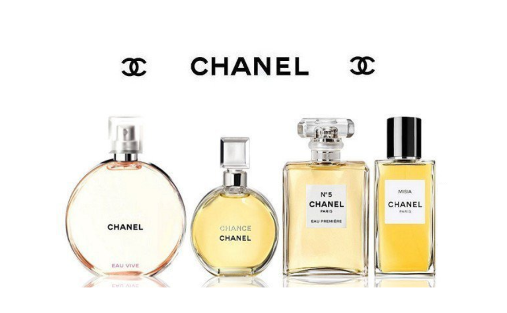
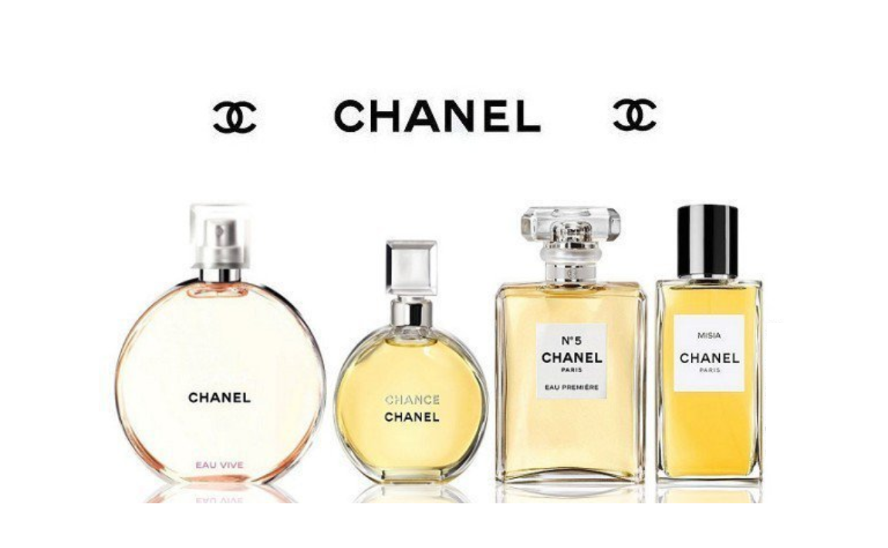

Nước hoa Chanel là một dòng nước hoa nổi tiếng sang trọng,
tinh tế và đẳng cấp. Đây chính là cái tên mà được chị em phụ nữ luôn săn lùng
và mong muốn sở hữu. Thương hiệu nước hoa này với rất nhiều loại, mùi hương
khác nhau để người dùng có thể thoải mái lựa chọn. Vậy trong bài viết này
chúng tôi sẽ hướng dẫn chọn nước hoa Chanel phù hợp và được các bạn nữ rất ưa chuộng.
Thương hiệu Chanel được sáng lập bởi một người phụ nữ người Pháp có tên thật là Gabrille Bonherur Chanel (1883 – 1971). Người phụ nữ này được được lọt vào top 100 người có tầm ảnh hưởng nhất thế kỷ XX do tạp chí Time bình chọn. Bà sinh ra và lớn lên trong một gia đình có hoàn cảnh nghèo khó nên đã trải qua rất nhiều cơ cực để mưu sinh. Ban đầu bà khởi đầu sự nghiệp bằng nghề ca sĩ hát phòng trà và lấy tên là Coco Chanel.
Sau nhiều năm bươn trải, cuộc sống của Chanel bước sang một trang khác với một xưởng thiết kế riêng của mình. Thương hiệu Chanel được sáng lập năm 1909 bằng một cửa hàng thời trang mang tên House of Chanel tại Paris. Ban đầu, cửa hàng của bà bán những bộ trang phục, phụ kiện thời trang mang phong cách trẻ trung, tinh tế, thanh lịch và quý phái. Dần dần những bộ thiết kế của bà được nhiều người biết đến và rất ưa chuộng. Chính từ đó, Chanel đã có quyết định cần phải tạo ra một loại nước hoa riêng để phối hợp với những bộ trang phục của mình.

Thương hiệu Chanel được sáng lập bởi một người phụ nữ người Pháp có tên thật là Gabrille Bonherur Chanel (1883 – 1971). Người phụ nữ này được được lọt vào top 100 người có tầm ảnh hưởng nhất thế kỷ XX do tạp chí Time bình chọn. Bà sinh ra và lớn lên trong một gia đình có hoàn cảnh nghèo khó nên đã trải qua rất nhiều cơ cực để mưu sinh. Ban đầu bà khởi đầu sự nghiệp bằng nghề ca sĩ hát phòng trà và lấy tên là Coco Chanel.
Sau nhiều năm bươn trải, cuộc sống của Chanel bước sang một trang khác với một xưởng thiết kế riêng của mình. Thương hiệu Chanel được sáng lập năm 1909 bằng một cửa hàng thời trang mang tên House of Chanel tại Paris. Ban đầu, cửa hàng của bà bán những bộ trang phục, phụ kiện thời trang mang phong cách trẻ trung, tinh tế, thanh lịch và quý phái. Dần dần những bộ thiết kế của bà được nhiều người biết đến và rất ưa chuộng. Chính từ đó, Chanel đã có quyết định cần phải tạo ra một loại nước hoa riêng để phối hợp với những bộ trang phục của mình.
